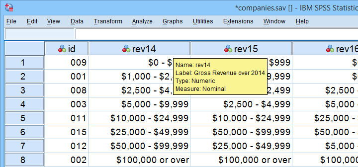
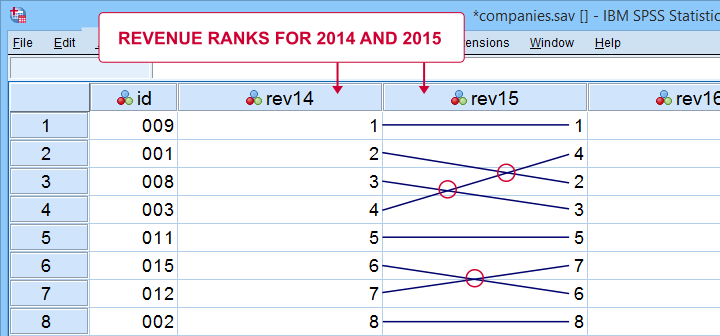
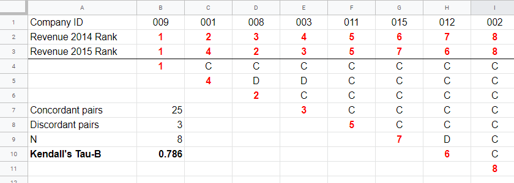
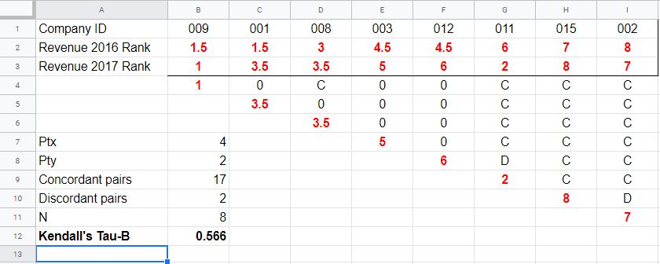
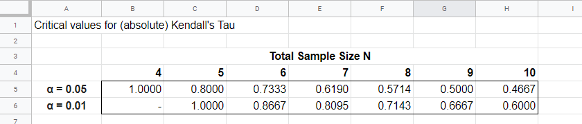
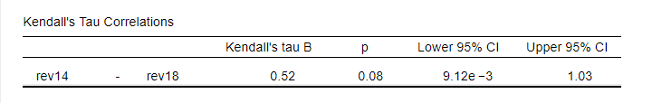
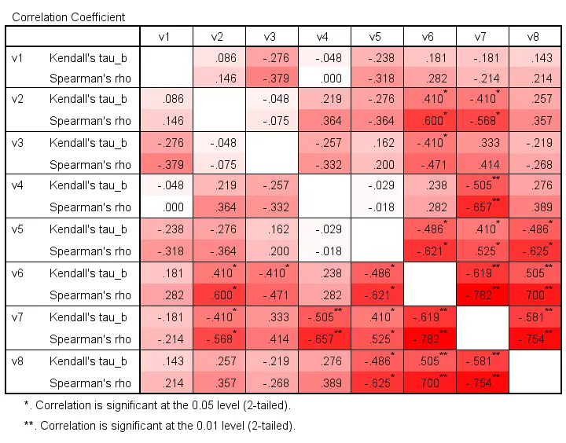
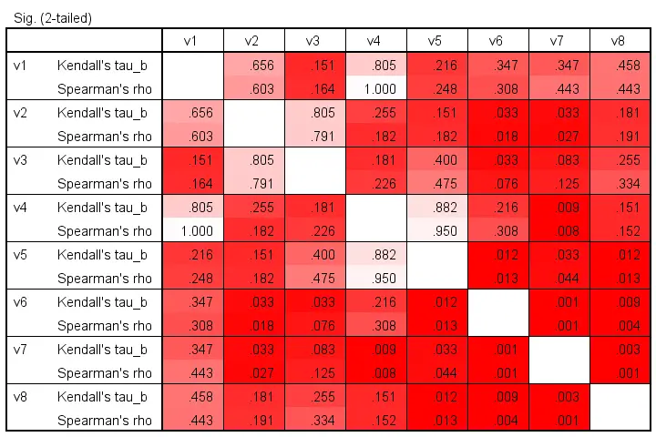
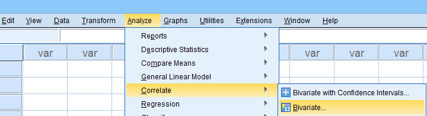

Kendall’s Tau – 简单介绍
作者：Ruben Geert van den Berg，发表于 相关性分析 (Correlation) & 统计学 A-Z (Statistics A-Z)
Kendall’s Tau (肯德尔tau系数) 是一个介于 -1 和 +1 之间的数值，它表示两个变量之间单调关系 (monotonously related) 的强度。
- Kendall’s Tau - 公式 (Formulas)
- Kendall’s Tau - 精确显著性 (Exact Significance)
- Kendall’s Tau - 置信区间 (Confidence Intervals)
- Kendall’s Tau vs. Spearman相关 (Spearman Correlation)
- Kendall’s Tau - 解释 (Interpretation)
Kendall’s Tau - 是什么？
Kendall’s Tau 是一种适用于定量变量 (quantitative variables) 和定序变量 (ordinal variables) 的相关性度量。它表明两个变量之间单调关系的强度：变量 x 的高值与变量 y 的高值或低值相关的程度如何？ 因此，Kendall’s Tau 与 Spearman 秩相关 (Spearman rank correlation) 的作用完全相同。 但是，这两种度量背后的逻辑有所不同。 让我们看一下下面显示的示例数据。

这些数据展示了 2014 年至 2018 年几年中几家公司的年度收入。我们想知道在 2014 年表现良好的公司在 2015 年表现如何。 请注意，我们只有收入_类别_，并且这些是定序变量：我们可以对它们进行排名，但无法计算它们的均值、标准差或 相关性 (correlations)。
Kendall’s Tau - 交点法 (Intersections Method)
如果我们对这两年的数据进行排名，我们可以检查这些排名有多大的不同。 第一步是将 2014 年和 2015 年的排名用线连接起来，如下图所示。

我们的连接线显示了 3 个交点。 这是由于 2014 年和 2015 年的排名略有不同而造成的。 请注意，排名差异越大，我们看到的交点就越多：
如果两个排名完全相同，则我们有零个交点；并且
如果两个排名完全相反，则交点的数量为
\[0.5\cdot n(n - 1)\]
这是 \(n\) 个观测值的最大交点数。 将实际的交点数除以最大交点数是 Kendall’s tau 的基础，以下用 \(\) 表示。
\[\tau = 1 - \frac{2\cdot I}{0.5\cdot n(n - 1)}\]
其中 \(I\) 是交点的数量。 对于我们的示例数据，有 3 个交点和 8 个观测值，结果为
\[\tau = 1 - \frac{2\cdot 3}{0.5\cdot 8(8 - 1)} =\] \[\tau = 1 - \frac{6}{28} \approx 0.786\]
由于 \(\) 的范围从 -1 到 +1，因此 \(\) = 0.786 表示很强的正相关关系：2014 年较高的收入排名与 2015 年较高的排名相关。
Kendall’s Tau - 一致性方法 (Concordance Method)
找到 Kendall’s Tau 的第二种方法是检查所有唯一的观测值对。 我们在 这个 Googlesheet 中进行了演示，如下所示。

从第 4 行开始，每个 2015 年的排名都与其右侧的所有 2014 年的排名进行比较。 如果这些排名更高，则我们有一致的观测值对，用 C 表示。这些表示正相关关系。
但是，2015 年的排名在其右侧具有更大的 2014 年排名表示不一致的对，用 D 表示。例如，单元格 D5 是不一致的，因为 2014 年的排名 (3) 小于 2015 年的排名 4。不一致的对表示负相关关系。
最后，Kendall’s Tau 可以根据一致的和不一致的对的数量计算得出，公式为
\[\tau = \frac{n_c - n_d}{0.5\cdot n(n - 1)}\]
对于我们的示例，在 8 个观测值中有 3 个不一致的对和 25 个一致的对，这导致 \[\tau = \frac{25 - 3}{0.5\cdot 8(8 - 1)} = \] \[\tau = \frac{22}{28} \approx 0.786.\]
请注意，C 和 D 加起来等于唯一的观测值对的数量，\(0.5n(n - 1)\)，在我们的示例中为 28。 考虑到这一点，您可能会看到
- \(\) = -1 如果所有对都不一致；
- \(\) = 0 如果一致的和不一致的对的数量相等；并且
- \(\) = 1 如果所有对都一致。
Kendall’s Tau-B & Tau-C
我们计算 Kendall’s Tau 的第一种方法仅在每个公司都属于不同的收入类别时才有效。 这适用于 2014 年和 2015 年的数据。 但是，对于 2017 年和 2018 年，一些公司属于相同的收入类别。 据说这些变量包含结 (ties)。 对于这种情况，使用两个修改后的公式：
- Kendall’s tau-b 修正了结；并且
- Kendall’s tau-c 忽略了结。
简单地“Kendall’s Tau”通常指 Kendall’s Tau-b。 我们不会讨论 Kendall’s Tau-c，因为它不再常用。 在没有结的情况下，两个公式会产生相同的结果。
Kendall’s Tau - 公式
那么我们如何处理结呢？ 首先，将平均排名分配给绑定的观测值，如 这个 Googlesheet 中所示：公司 009 和 001 共享两个最低的 2016 年排名，因此它们都被排名为排名 1 和 2 的平均值，从而产生 1.5。

其次，与绑定的 2016 年观测值相关的对既不一致也不不一致。 这样的对（B、C 和 E、F 列）收到 0 而不是 C 或 D。第三，在其右侧具有 2017 年结的 2017 年排名也被分配为 0。 这样，上面示例中的 28 对导致
- 17 个一致的对 (C)，
- 2 个不一致的对 (D)，以及
- 9 个不确定的对 (0)。
对于计算 \(_b\)，任一变量上的结会导致一个惩罚，计算为
\[Pt = \Sigma{(t_i^2 - t_i)}\]
其中 \(t_i\) 表示任一变量的第 \(i\) 个结的长度。 2016 年的排名有两个结 - 长度均为 2 - 导致
\[Pt_{2016} = (2^2 - 2) + (2^2 - 2) = 4\]
同样，\[Pt_{2017} = (2^2 - 2) = 2\]
最后，\(_b\) 的计算公式为
\[\tau_b = \frac{2\cdot (C - D)}{\sqrt{n(n - 1) - Pt_x}\sqrt{n(n - 1) - Pt_y}}\]
对于我们的示例，这导致
\[\tau_b = \frac{2\cdot (17 - 2)}{\sqrt{8(8 - 1) - 4}\sqrt{8(8 - 1) - 2}} =\]
\[\tau_b = \frac{30}{\sqrt{52}\sqrt{54}} \approx 0.566\]
Kendall’s Tau - 精确显著性
对于 N ≤ 10 的小样本量，可以使用置换检验计算 \(_b\) 的精确 显著性水平 (significance level)。 下表给出了 α = 0.05 和 α = 0.01 的临界值。

我们没有结的示例计算导致 8 个观测值的 \(_b\) = 0.786。 由于 \(|_b|\) > 0.7143，因此 p < 0.01：我们拒绝零假设，即在整个群体中 \(_b\) = 0。 基本结论：2014 年和 2015 年的收入很可能在整个公司群体中具有正单调关系。
第二个示例（有结）导致 8 个观测值的 \(_b\) = 0.566。 由于 \(|_b|\) < 0.5714，因此 p > 0.05。 我们保留零假设：如果 2016 年和 2017 年的收入在整个群体中没有单调关系，则我们的样本结果并非不可能。
Kendall’s Tau-B - 渐近显著性 (Asymptotic Significance)
对于 N > 10 的样本量，
\[z = \frac{3\tau_b\sqrt{n(n - 1)}}{\sqrt{2(2n + 5)}}\]
大致遵循 标准正态分布 (standard normal distribution)。 例如，如果 \(_b\) = 0.500 基于 N = 12 个观测值，则
\[z = \frac{3\cdot 0.500 \sqrt{12(11)}}{\sqrt{2(24 + 5)}} \approx 2.263\]
我们可以轻松地查到 \(p(|z| ) \)：我们拒绝在 α = 0.05 时群体中 \(_b\) = 0 的零假设，但不在 α = 0.01 时拒绝。
Kendall’s Tau - 置信区间
\(_b\) 的 置信区间 (Confidence intervals) 可以很容易地从 JASP 获得。 下面的屏幕截图显示了一个输出示例。

我们假定这些置信区间需要 N > 10 的样本量，但我们找不到任何相关参考。
Kendall’s Tau vs. Spearman 相关
Kendall’s Tau 与 Spearman 秩相关 的作用完全相同：两者都表明 2 个定序或定量变量之间的单调关系强度。 那么哪个更好呢？ 一些通用指南是
- 统计特性 (statistical properties) - 抽样分布 (sampling distribution) 和标准误差 - 对于 Kendall’s Tau 比对于 Spearman 相关性更清楚。 Kendall’s Tau 也更快地收敛到正态分布（即，对于较小的样本量）。 结果是，Kendall’s Tau 的显著性水平和置信区间往往比 Spearman 相关性更可靠。
- Kendall’s Tau 的 绝对值 (absolute values) 往往小于 Spearman 相关性：当两者都在相同的数据上计算时，我们通常会看到类似 \(|_b| |R_s|\) 的情况。
- Kendall’s Tau 通常具有比 Spearman 相关性更小的标准误差。 结合前一点，Kendall’s Tau 的 显著性水平 往往与 Spearman 相关性的显著性水平大致相等。
为了说明第 2 点，我们计算了 8 个模拟变量 v1 到 v8 的 Kendall’s Tau 和 Spearman 相关性。 下面显示的颜色与绝对值线性相关。

对于基本上所有单元格，第二行（Spearman 相关性）都更暗，表明绝对值更大。 此外，\(|_b| |R_s|\) 似乎是大多数单元格的粗略但合理的经验法则。
相同变量的显著性水平如下所示。

这些颜色显示没有清晰的模式：有时 Kendall’s Tau 比 Spearman 的 rho “更显著”，有时则相反。 另请注意，显著性水平往往比实际相关性更相似。 遗憾的是，这些 p 值的正 偏度 (skewness) 导致颜色之间的分散有限。
Kendall’s Tau - 解释
- \(_b\) = -1 表示 2 个变量之间存在完美的负单调关系：变量 A 的较低分数始终与变量 B 的较高分数相关；
- \(_b\) = 0 表示根本没有单调关系；
- \(_b\) = 1 表示完美的正单调关系：变量 A 的较低分数始终与变量 B 的较低分数相关。
只有当两个变量具有相同数量的不同排名时，才能达到 -1 和 +1 的值，从而产生一个正方形列联表。
此外，如果 2 个变量是独立的，则 \(_b\) = 0，但反过来并不总是成立：可能仍然存在曲线关系或其他非单调关系。
我们没有找到任何用于将 \(_b\) 解释为效应量 (effect size) 的经验法则，因此我们将提出一些：
- \(|_b|\) = 0.07 表示弱关联；
- \(|_b|\) = 0.21 表示中等关联；
- \(|_b|\) = 0.35 表示强关联。
SPSS 中的 Kendall’s Tau-B
从 SPSS 获取 Kendall’s Tau 的最简单选项是来自相关性对话框，如下所示。

或者（更快），使用简化的 语法 (syntax)，例如
***Kendall's Tau-B for variables rev14 through rev18.
**
nonpar corr rev14 to rev18
/print kendall nosig.